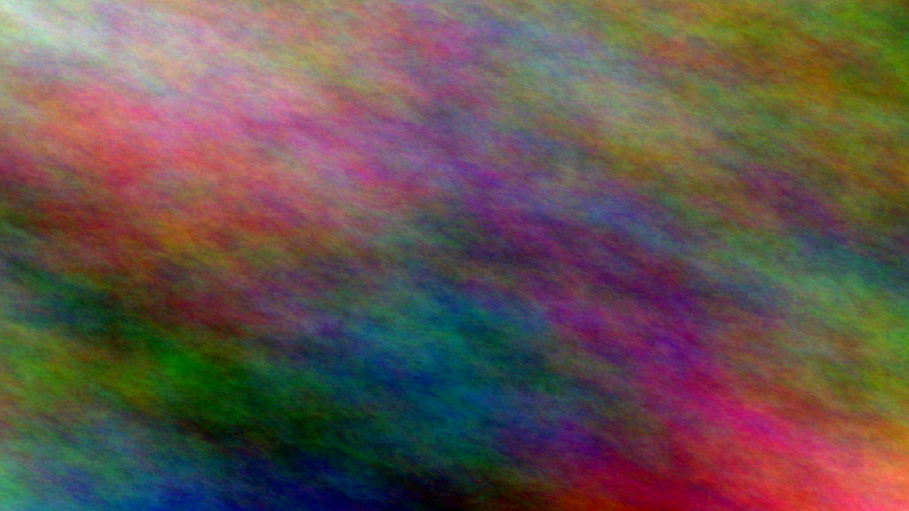

Review: PR 0-smoke
scarf-concept.png
origin
generated
tool
imagegen
provider
openai
model
gpt-image-2
prompt
violet head scarf concept, painted
sky.png

No provenance record.
walk
GIF
No provenance record.
chime.ogg
No provenance record.
lantern.glb
GIF
No provenance record.